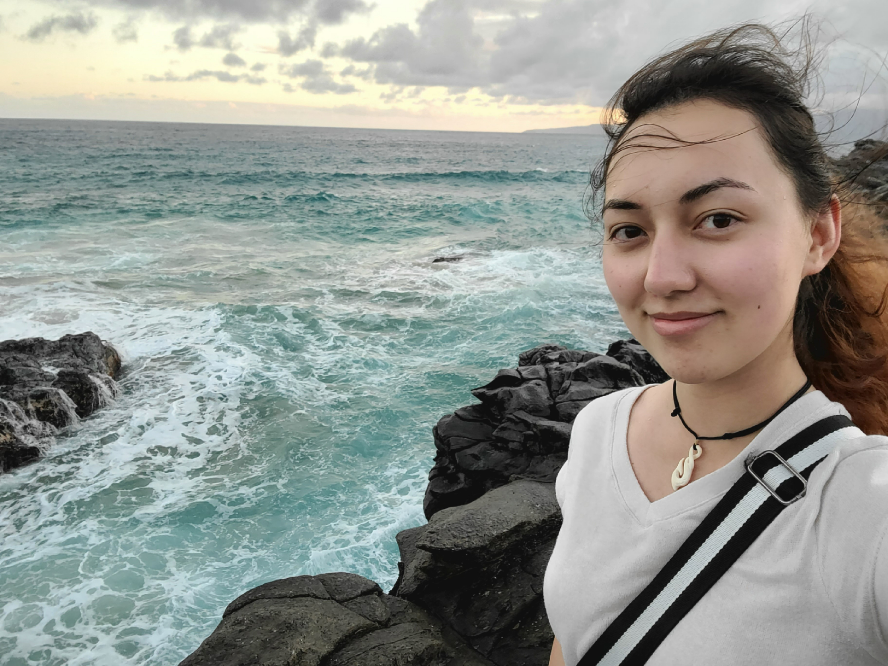

About
As a fouth year Computer Science student, I find a strange joy in the midst of spreadsheets and analytics. Coming from eastern Illinois to study at Rose-Hulman Institute of Technology in Terre Haute, Indiana, my interests lie in data science, website and app development, and xR (VR, AR, MR).
Paired with this analytical side are my pursuits of self-expression and bouts of creativity. Whether it be through writing or digital mediums, I find great importance in the reflection of one's experiences and the endless ways storytelling can manifest outside words on paper. Outside of STEM and creative endeavors, my time is spent immersed in nature and the gym- the adventure and exploration of hiking and scuba diving mixed with strength and flexibility training.